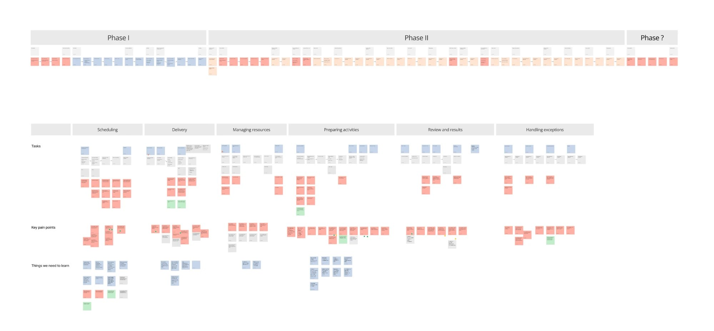
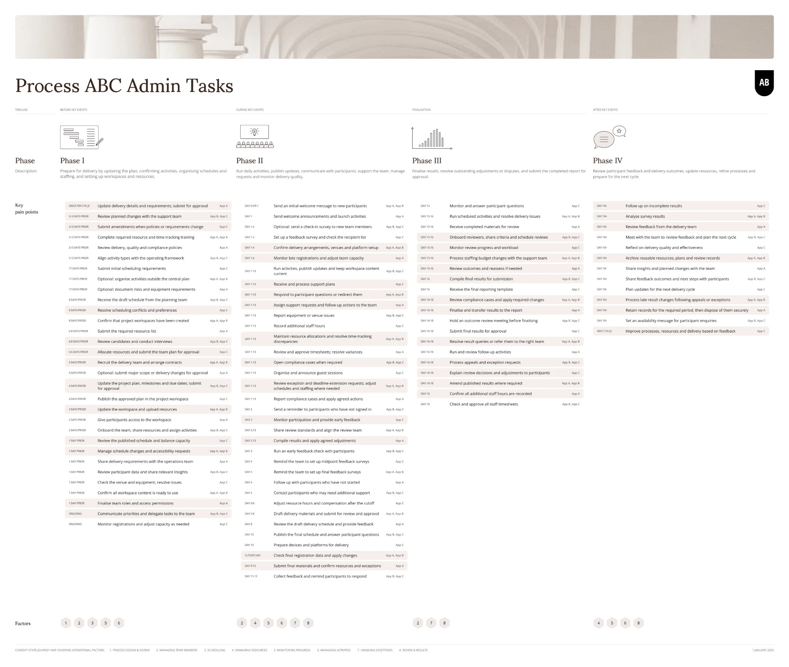

Large education client
My role
Led current-state assessments, workshops, workflow mapping, prototyping, and prepared comprehensive strategic reports and maps used to inform major transformation initiatives.



Note: all UI designs are white-labelled and all images are re-generated.